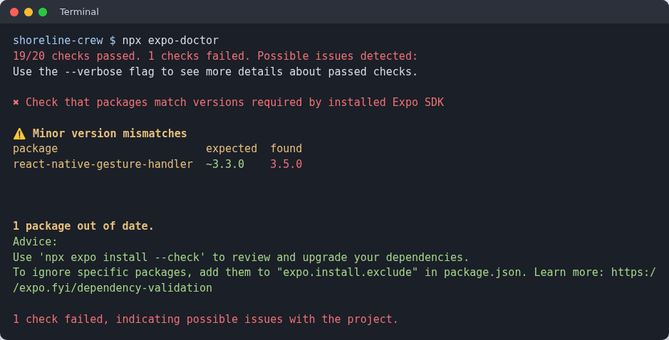

🧭 Lesson 10.2: Working on Real Mobile Projects
Shoreline Crew runs, passes its checks and has a release checklist. Real apps do not stop there: someone asks how long the next feature will take, a teammate opens a pull request, a store review takes longer than planned, and a new Expo SDK arrives while the old one keeps working. This last lesson is about that part of the job: estimating phone work honestly, choosing the right level of native control, working in a team, keeping an app healthy for years, and deciding where you go next.
🎯 Learning Objectives
By the end of this lesson, you will be able to:
- Estimate a mobile feature as a range, from a task breakdown that includes the work only phones add (two platforms, permissions, offline, builds, store review)
- Choose between Expo Go, a development build, Continuous Native Generation and committed native folders, and explain when a local native module (Expo Modules API) is worth it
- Work in a team with short branches, a phone-aware pull request template, CI and a release train that plans for store review
- Keep an Expo app current: read
npx expo install --check,npx expo-doctorandnpm outdated, repair version drift withnpx expo install --fix, and upgrade one SDK at a time - Write a learning plan for the months after the course, with your final project at its center
📦 Code for this lesson
Shoreline Crew's code does not change in this lesson: keep using the folder you finished Lesson 9.4 with (or lesson-35-end.zip). The new files you write today live in your final project.
In This Lesson
👋 From a Course to a Codebase
Every lesson in this course had a known end: a stage that passed its checks, a list of steps that led there, and a next lesson that picked up exactly where you stopped. Real projects have none of that. Nobody hands you the next step, the app has to keep working after you stop touching it, and other people change the same code you do.
The good news is that you already practiced most of what that takes, one lesson at a time. You read red screens and terminal output instead of guessing (every lesson), wrote tests that prove a rule still holds (Module 8), ran checks on every push (Lesson 9.3), and learned what a store asks for before an app reaches anyone (Lesson 9.4). This lesson connects those habits to the questions people will actually ask you:
- "How long will it take?" Estimating, with the work phones add.
- "Can React Native even do that?" Platform trade-offs, from Expo Go to your own native module.
- "Can you review my pull request before Thursday's build?" Teamwork and release trains.
- "Why does the app not open in Expo Go any more?" Maintenance, SDK upgrades and dependency hygiene.
- "What should I learn next?" Your plan after the course.
Why it matters for your work: in interviews and with clients, knowing an API is the easy part. What makes people trust a developer is being able to say "about three to five days, because the photo needs a new server endpoint and the privacy answers change", or "that is a native change, so it waits for the next build, not an update". Those sentences come from this lesson.
🌱 Nobody feels ready
Most developers on their first team feel they are the only one who does not know what they are doing. They are not: the people around them have simply been confused about more things for longer, and have learned to say "I don't know yet, here is how I will find out". If you finish this course still unsure about some parts, that is the normal state of the job, not a sign you are not cut out for it. The skill is not knowing everything; it is knowing how to find out, and saying so out loud.
📏 Estimating Mobile Work
An estimate is a forecast, not a promise. Experienced developers are not better at guessing a single number; they are better at breaking the work down, noticing what they have not thought about yet, and saying how sure they are. Phone apps add their own hidden work, and it is exactly the part a quick guess leaves out.
The work phones add
Take a request organizers could easily make: "Let volunteers add a photo when they check in, so we can see the beach before the cleanup." On the web it sounds like a form field. On a phone, the honest list looks like this:
| Part of the work | What it means for this request | Lessons |
|---|---|---|
| The happy path | A Take photo button in the check-in modal, a preview, sending it with the code | 6.2, 6.3 |
| The server | shoreline-api has no "check-in photo": somebody must add the endpoint and decide how long photos are kept. Until then, the feature is blocked, whatever the app does | 5.1, 9.4 |
| Permissions | The camera question at the right moment, and a way forward after "Don't allow"; already built in 6.1, so cheaper than the first time | 6.1 |
| Offline | Check-in is not queued today (Lesson 6.3 decided that). Does a photo change that decision? | 5.5, 6.3 |
| Two platforms | Testing on an Android phone and an iPhone, small and large text, light and dark | 2.5, 8.1 |
| Tests | The new rule in Jest, the modal's new state in a screen test | 8.2, 8.3 |
| Privacy and stores | Photos at check-in are new data: the inventory and both stores' privacy answers change | 9.4 |
| Shipping | No new native package (expo-image-picker is already in the app), so an update can deliver it; but store answers change before release | 9.3 |
The first row is what most people estimate. The other seven are where the time goes. None of them is exotic: you did each one in this course. The skill is remembering them before you give a number, which is why a checklist like this table beats memory.
Ranges, not single numbers
Estimate each part as three numbers: optimistic (everything goes right), likely, and pessimistic (the realistic bad case, not the disaster). A common way to combine them is the three-point (PERT) estimate: (optimistic + 4 × likely + pessimistic) ÷ 6. The formula is less important than the habit: the gap between optimistic and pessimistic shows where your uncertainty lives, and that is what you discuss with the client.
| Part (example hours, for illustration) | Optimistic | Likely | Pessimistic |
|---|---|---|---|
| Check-in modal: button, preview, permission path | 2 | 3 | 6 |
| Sending: client function, mutation, error states | 1 | 2 | 4 |
| Tests: rule and screen | 1 | 2 | 3 |
| Two phones, large text, dark mode | 1 | 2 | 4 |
| Privacy inventory and store answers | 0.5 | 1 | 2 |
| App total | 5.5 | 10 | 19 |
Three-point: (5.5 + 40 + 19) ÷ 6 is about 11 hours. What you tell the client is not "11 hours". It is: "About two working days for the app, possibly up to three, once the server can accept the photo. The server part is not included, and the store privacy answers have to change before the release." A range, the assumptions, and what you depend on.
These numbers are an example, not a benchmark: your own numbers come from your own time log. That is why Lesson 10.1 asked you to write an estimate next to each milestone and the real hours after it. After two or three milestones you will see your own pattern (most people underestimate, and most underestimate the same kinds of work), and you can correct for it. Nothing improves estimates as reliably as comparing them with what really happened.
💡 Mental model: the tide table
A tide table does not promise where the water will be at 10:14. It gives a range, and the people who use it plan for the low end and the high end: when to leave the car, when the rocks are safe. An estimate is a tide table for work. It is useful exactly because it admits a range, and it gets better each season as you compare the forecast with the water you actually saw.
Time that is not yours
Some mobile time cannot be shortened by working harder, so it belongs in the plan, not in the estimate of your effort:
- Build queues. Lesson 9.2 explained how a free-plan cloud build waits in a queue; a paid plan or a local build is faster, but never instant.
- Store review. Apple says most submissions are reviewed within a day or two (Lesson 9.4 quoted its numbers); Google Play's reviews can take several days, longer for a new app or account. A rejection restarts the clock.
- New accounts. A new personal Google Play account needs a closed test with testers for two weeks before production (Lesson 9.4). That is a calendar fact, not an effort estimate.
- Other people. A server change by another team, a client who answers emails on Fridays, a reviewer on holiday.
Store rules and review times change: before a deadline depends on them, read the current pages, as Lesson 9.4 did.
🧭 Platform Trade-offs
"Should we use Expo?" used to be a big decision, because leaving Expo's managed setup meant "ejecting": generating native folders once and maintaining them by hand forever after. You may still read that word in older articles and in this course's own old pages. Today it is not one decision but a ladder, and you can climb one step at a time:
| Step | What you get | What it costs | In this course |
|---|---|---|---|
| Expo Go | Instant start, any phone, no build; every module in the SDK | Only the modules inside Expo Go; Expo's name and icon; only the newest SDK | 1.2 to 8.4 |
| Development build | Your own app with your names, ids, config plugins and any native package; Metro and Fast Refresh as before | A build (and a rebuild whenever native code changes) | 9.2 |
| Continuous Native Generation (CNG) | android/ and ios/ are generated from app.config.ts and plugins by npx expo prebuild, never edited or committed; upgrades regenerate them | Native changes go through config plugins, not hand edits | 9.1, 9.2 (EAS does it for you) |
| Committed native folders | You edit android/ and ios/ by hand, like a project made without Expo | Every SDK upgrade means merging native changes yourself (Expo's upgrade guide points to a native upgrade helper); you need Android Studio and Xcode skills | Not used |
Shoreline Crew sits on the third step without you noticing: you never committed native folders, and EAS Build generated them from your config each time. That is the step most teams should stay on. The fourth is a choice with a lasting cost, made when a team really needs hand-edited native projects; it is not a sign of a "serious" app.
When to leave Expo Go
Lesson 9.2's rule, in one line: as soon as you need something Expo Go cannot carry. In practice that is any of these:
- a native package that is not part of the Expo SDK (a payment SDK, a specific Bluetooth library);
- your own name, icon, ids, permission sentences or notification icon on the phone;
- remote push notifications on Android, or settings only a config plugin can make;
- staying on an older SDK after Expo Go moved on (Expo Go supports only the newest SDK).
Many teams make a development build from the first week anyway: the cost is one build, and then nobody is surprised by the difference between Expo Go and the real app.
Your own native code
Sometimes the library you need does not exist: a client's label printer, a sensor with its own SDK, a platform feature nobody has wrapped yet. Before writing native code, look properly: the Expo SDK reference, the React Native Directory (which lists libraries with their platforms and whether they support the New Architecture), and the library's own issues page. Most needs are already met.
If none is, the Expo Modules API lets you write a native module yourself, in Swift for iOS and Kotlin for Android, with a TypeScript interface your screens import like any other module. Expo's docs start one inside an existing app with:
npx create-expo-module@latest --localAccording to the docs, this creates a modules/ folder with your module in it (its android, ios and TypeScript parts), and the app picks it up in its next native build. It does not run in Expo Go, which only contains the SDK's own modules: it is a development-build feature. This lesson did not create or build one; treat it as the door, not the room. Writing a module means learning a little Swift and Kotlin, and it is one of the best ways to understand what the "radio relay" between JavaScript and native code (Lesson 1.1) really does.
💡 Mental model: the field kit, again
Since Lesson 9.2 you have pictured a build as a field kit: the native modules packed into the app before it leaves the harbor. Expo Go is the course's shared kit, the same for everyone. A development build is your own kit, packed from a list (package.json and app.config.ts). CNG means the kit is repacked from the list every time, so the list is the truth. A local native module is a tool you made yourself and added to the list. Committed native folders mean you stopped using the list and repack by hand.
React Native or fully native?
An honest answer for clients: React Native with Expo is a strong default for apps like the ones in this course, made of screens, forms, lists, server data, offline storage and the common device features, shared between Android and iOS by one team. Fully native apps (Swift and Kotlin, one team per platform) still make sense when an app lives mostly in one platform's newest features, in heavy graphics or audio, or when a company already has two native teams. Neither choice is a badge. The right question is which one this team can build, test and maintain for years.
🤝 Working on a Team
The web course's last lesson showed how teams work with branches, pull requests, CI and kind, specific code review. All of that holds for a phone app. What a phone team adds is mostly about two questions every change must answer: which phones was this checked on? and does it need a new build, or can an update deliver it?
Branches and pull requests
- Short-lived branches, one change each, merged within days. A branch that lives for weeks collides with everything, and on a phone app it also collides with SDK upgrades.
- A pull request template that asks the phone questions: tested on which phones, native change or not, does it change what the app collects. The project adds one to your final project.
- CI on every pull request (Lesson 9.3): types, lint and tests, and from today, if you like, the version checks from this lesson (Exercise 3).
- Review that helps. Say what you noticed and why it matters ("on the largest text this button is cut off"), label how important it is ("blocking" or "a thought"), and say what is good too. Reviewing someone else's code is how you learn a codebase fastest.
Asking good questions
On a team you will ask for help often, and how you ask decides how fast you get it. A question with four parts can usually be answered in one reply:
| Part | Example |
|---|---|
| Goal: what you are trying to do | "I want the check-in photo to upload after the code is accepted." |
| Expected: what should happen | "The modal should close and My cleanups should show Checked in." |
| Actual: what happens, word for word | "On Android the modal stays open and the terminal prints: Unsupported FormDataPart implementation." |
| Tried: what you already checked | "Same on the web preview: works. Expo Go and the dev build: both fail. I read Lesson 6.2's note on uploads." |
Often you find the answer while writing the fourth row. That is not wasted effort; it is the debugging method from Lesson 8.4 in another form.
Release trains
A web app can deploy ten times a day. A store app cannot: each release is a build, a review and a gradual rollout. Many mobile teams therefore run a release train: a fixed rhythm (every one, two or four weeks) where whatever is merged and tested by the cut-off leaves on that train, and anything late simply waits for the next one. Nobody argues about whether a feature "must" make it; the next train is never far away.
- Cut-off: a release branch is made from
main; only fixes go onto it. - Testers: an internal preview build (Lesson 9.2), on real phones, both platforms.
- Review: the store build is submitted with time to spare for a rejection (Lesson 9.4).
- Gradual rollout: Google Play lets you release to a percentage of users first (a staged rollout), and the App Store offers a phased release for automatic updates. Start small and widen it while the crash reports stay quiet.
- Between trains: JavaScript-only fixes can go out as an EAS Update to the same runtime version (Lesson 9.3), tested on the preview channel first. Native changes always wait for the next train.
The exact rollout steps and review times are store policy and change over time: check the current Play Console and App Store Connect help before you promise a date.
🔧 Keeping an App Healthy
A phone app is never finished, because the ground under it moves. Three things move it, whether you touch the code or not:
- The Expo SDK. Expo's docs say new SDK versions are released three times a year, each targeting one React Native version. Expo Go supports only the newest SDK, so a project that falls behind stops opening in the store's Expo Go (a development build keeps working).
- The stores. Google Play raises the required target Android version every year for new apps and updates, and Apple requires recent Xcode and iOS SDK versions for uploads (Lesson 9.4 listed the current ones). An app that is never upgraded eventually cannot be updated in the stores at all.
- The packages. Hundreds of them, each with its own releases, some with security fixes you want.
So the realistic plan is: upgrade the SDK at least once a year, one SDK at a time, and check dependencies every few weeks. Skipping a year means doing three upgrades at once, under deadline pressure, with every changelog to read in one go.
⚠️ A real cautionary tale: this course
Before this rebuild, this course's pages had been written over several months, and in that time the SDK moved on twice. Its old pages mention five different SDK versions between them (43, 49, 50, 51 and 52), so a learner following one page and then the next could meet instructions for different SDKs, with commands and packages that had changed in between. Nobody made a mistake on any single page: the drift came from time passing without one upgrade pass across all of them. The rebuild pins one SDK (58) everywhere and checks every lesson's code against it. Your apps deserve the same discipline. And when you read this, a newer SDK than 58 may well exist; the upgrade steps below are how you would move Shoreline Crew to it.
Three commands for a health check
You met two of these in Lesson 1.2. Run them in shoreline-crew:
npx expo install --check
npx expo-doctor
npm outdatedExpected output of the first two (when the course was checked; Expo publishes patch releases, so yours may list some)
env: load .env.local
env: export EXPO_PUBLIC_API_URL
Dependencies are up to date
20/20 checks passed. No issues detected!npx expo install --check compares every package Expo knows with the version SDK 58 expects. npx expo-doctor runs about twenty checks on the whole project (versions, duplicate native packages, config problems; Lesson 9.1 used it to find a duplicate). Both green: the project matches its SDK. If npx expo install --check lists a few packages one patch version behind (for example expo ~58.0.26), Expo has released fixes since the course was checked: that is the drift Step 2 repairs, not a mistake of yours. Then the third:
Expected output of npm outdated (your list will be longer or shorter as packages release)
Package Current Wanted Latest Location Depended by
@lottiefiles/dotlottie-react 0.13.5 0.13.5 0.22.2 node_modules/@lottiefiles/dotlottie-react shoreline-crew
@react-native-async-storage/async-storage 2.2.0 2.2.0 3.1.1 node_modules/@react-native-async-storage/async-storage shoreline-crew
@shopify/flash-list 2.3.2 2.3.2 2.3.3 node_modules/@shopify/flash-list shoreline-crew
eslint 9.39.5 9.39.5 10.15.0 node_modules/eslint shoreline-crew
react 19.3.0 19.3.0 19.3.1 node_modules/react shoreline-crew
react-dom 19.3.0 19.3.0 19.3.1 node_modules/react-dom shoreline-crew
react-native-gesture-handler 3.3.0 3.3.0 3.5.0 node_modules/react-native-gesture-handler shoreline-crew
react-native-worklets 0.13.0 0.13.0 0.13.1 node_modules/react-native-worklets shoreline-crew
typescript 6.0.3 6.0.3 7.0.2 node_modules/typescript shoreline-crewThis table looks alarming and mostly is not. "Latest" is the newest version on npm; it does not know about Expo. Look at three rows you already know: TypeScript 7.0 (Lesson 1.3 showed that it breaks npx expo lint, and the SDK pins 6.0), AsyncStorage 3 and Gesture Handler 3.5 (SDK 58 pins 2.2.0 and 3.3). Expo tests each SDK with specific versions of the native packages, and Expo Go contains exactly those. "Latest" is not the right version for your app; "what npx expo install picks" is. For plain JavaScript packages Expo does not know (React Hook Form, Zod, TanStack Query), npm outdated is the right guide: read their release notes and update them on a branch with CI.
When versions drift
Drift usually comes from a reasonable-looking command: a teammate sees "Latest 3.5.0" above and runs npm install react-native-gesture-handler@latest. Nothing breaks on their computer. The checks catch it:

npx expo install --fix does.The repair is the command that installs what the SDK expects for every listed package:
npx expo install --fixIt changes package.json and the lockfile back to the SDK's version (the project's drift drill shows git status clean afterwards). On a phone, the mismatched version could have behaved differently in Expo Go, which carries its own copy of each native module, than in a build; that is exactly the kind of bug that only appears on someone else's phone. The project lets you try the whole drift and repair safely on a branch.
Upgrading the SDK, one at a time
Expo's upgrade guide recommends moving one SDK version at a time. On a branch, with a clean working tree:
- Read the release notes of the next SDK on Expo's changelog, especially the "Upgrading your app" section at the end and anything about packages you use.
- Install the next SDK with
npx expo install expo@^NN.0.0(NN = the next SDK number), thennpx expo install --fixso every other Expo package follows it. - Run
npx expo-doctorand fix what it reports. - Run the three checks (
npx tsc --noEmit,npx expo lint,npm test -- --watchAll=false) and read every failure as a to-do list, the way Lesson 10.1 read TypeScript's errors. - Open the app on both platforms, then make new development and preview builds: native code changed, so updates cannot carry this. With CNG, any
android/orios/folders you generated for the old SDK are deleted and generated again. - Merge when CI is green and the preview build has been on real phones.
🧩 Version note: upgrade commands
These steps follow Expo's upgrade guide for SDK 58 at the time of writing. There is no newer SDK to upgrade to in this course, so the steps were not run here; read the current guide and the release notes first, because each SDK's notes add their own steps.
Dependency hygiene
- Fewer packages, fewer upgrades. In Lesson 8.4 you removed three template packages the app never used and measured the Android bundle; every package you do not have is one you never upgrade, audit or debug. Before adding one, ask whether the SDK or twenty lines of your own code already do it.
- Native packages through
npx expo install, always. It picks the SDK's version; plainnpm installpicks "latest". - Read audit warnings, don't force them.
npm installprints vulnerability counts (the drift drill's printed 30, all from development tools). As Lesson 1.2 warned,npm audit fix --forcemay install versions the SDK does not expect; readnpm audit, and update the package that matters the normal way. - The lockfile is part of the code. Commit it; CI and teammates use
npm ci, so everyone runs exactly what was tested. - A calendar, not a mood. A health check every few weeks, an SDK upgrade at least once a year, the store's yearly target rules in the calendar.
🗺️ Where to Go Next
Your final project comes first: finishing it, reviewed and launched, is worth more than starting anything new. After that, pick one direction for the next few months rather than five:
| If you enjoyed… | Go deeper with | A first project |
|---|---|---|
| Device features and what happens below JavaScript | Swift or Kotlin basics, then the Expo Modules API | A small local module that wraps one platform feature your app needs |
| Offline data and sync | A real back end: an https API with a database, authentication and deletion | Give your final project's mock API a real server, with the same rules and tests |
| Motion and touch | Deeper Reanimated and Gesture Handler, and the platforms' design guidelines | One screen of your app redesigned for one-handed use, measured on an old phone |
| Quality | End-to-end tests on devices (Maestro, from Lesson 8.3), accessibility audits with VoiceOver and TalkBack, performance budgets in CI | Your final project with every rubric row at "strong" |
| Shipping and running apps | Release management, monitoring, the stores' policies | Your app through a store's testing track, with a real release checklist |
| The web side | Server rendering and server components: the React + WordPress course | Public web pages for your app's data |
| Working with clients | The Freelance Launchpad guide: pricing, contracts, finding work | Your final project's demo, shown to a real person who might use it |
A rhythm that keeps learning going after a course: a little time on most days, one small thing shipped every week (a fix, a test, a screen, a note about something you learned), and once a month something shared with other people: an answer in a community forum, a pull request to an open-source library you used, a review for a friend. Explaining why a list re-renders or why a permission was refused is the fastest way to find out how well you know it.
For a portfolio, three things carry the most weight: a repository with a README, a green CI badge and your worksheet; a two-minute recording of the main journey on a real phone; and a story you can tell about one decision and one bug. Shoreline Crew counts too: it is a complete app with tests, CI, variants and privacy answers. Say honestly which parts the course guided and which you designed yourself.
🎉 Look How Far You've Come
Thirty-six lessons ago you put a View on a screen in a browser tab and learned it was not a div. Here is what you can do now:
| Module | What you can do now |
|---|---|
| 1 From Web to Native | Explain how React Native draws native views, set up Expo with a phone, an emulator or the web preview, and bring shared TypeScript from a web app |
| 2 Core Components and Layout | Style without a cascade, lay out with flexbox, handle images, fonts and safe areas, touch and input, and themes for light and dark |
| 3 Lists | Build fast lists with FlatList and FlashList, with every state, grouping and paging |
| 4 Navigation | Route with Expo Router: stacks, tabs, modals, protected screens and deep links |
| 5 Data | Reach a server from a phone, cache it with TanStack Query, store data in the right place, build keyboard-friendly forms, and work offline with a queue that sends once |
| 6 Device Features | Ask for permissions at the right moment, and use the camera, location and maps, notifications, haptics, sharing and files |
| 7 Animation and Gestures | Animate with Reanimated, add gestures with a button behind each, and respect Reduce Motion |
| 8 Quality | Make screens accessible, test logic and screens with Jest, and measure before you optimize |
| 9 Ship It | Configure variants, build with EAS, update over the air, report crashes, and prepare an app for both stores |
| 10 Capstone and Career | Plan and build your own app from a brief, and work the way mobile teams work |
⚠️ Common Mistakes
The outputs below were printed by the real tools on a copy of Shoreline Crew.
⚠️ Installing a native package at "latest"
npm install react-native-gesture-handler@latest succeeds, and package.json now says ^3.5.0 where the SDK expects ~3.3.0. In CI or after you answer "no" to the question, the check stops with an error exit code:
Expected output (npx expo install --check, answering n)
env: load .env.local
env: export EXPO_PUBLIC_API_URL
The following packages should be updated for best compatibility with the installed expo version:
react-native-gesture-handler@3.5.0 - expected version: ~3.3.0
Your project may not work correctly until you install the expected versions of the packages.
✔ Fix dependencies? … no
Found outdated dependenciesInstall native packages with npx expo install, and repair drift with npx expo install --fix. If a library's newer version really is required (a fix you need), the doctor's advice names expo.install.exclude in package.json: use it only with a written reason, because you now test that combination yourself.
⚠️ Estimating only the happy path
"Two hours: it's one button." Then the server needs a new endpoint, the camera permission needs its "no" path, the privacy answers change and the iPhone test shows the keyboard covering the field. Use the table in "Estimating Mobile Work" as a checklist, give a range, and name what you depend on.
⚠️ Promising a fix "today" that needs a build
A JavaScript fix can reach phones as an update (Lesson 9.3). A new native package, a permission sentence or a config plugin cannot: it needs a new build, a store review and a rollout. Before you promise a time, ask the pull request template's question: native change or not?
⚠️ Saving the SDK upgrade for "when we have time"
Nobody ever has time, until Expo Go stops opening the project or a store refuses the next update. By then the app is two or three SDKs behind, and the upgrade is several upgrades in one. Put it in the calendar, one SDK at a time, the way this course's own drift shows.
⚠️ Running npm audit fix --force
The audit counts in npm install's output (30 in the drift drill) invite it. It can install versions outside what the SDK tested, and the next npx expo-doctor may fail. Read npm audit, see which package and which path it is (many are development tools that never ship in the app), and update the right one deliberately.
🛠️ Project: A Maintenance and Team Kit
You give Shoreline Crew a health check and practice a version-drift repair on a branch (its code ends exactly as it started), estimate a feature, and add the team pieces to your final project: a decision record, a pull request template, a maintenance calendar and a learning plan.
Step 1: A health check on Shoreline Crew (10 min)
In shoreline-crew, run the three commands from "Keeping an App Healthy": npx expo install --check, npx expo-doctor and npm outdated. If npx expo-doctor asks to install itself, answer y. Compare your output with the cards above. For each row of npm outdated, write one word in your journal: pinned (an Expo package, follows the SDK), update (a plain JavaScript package worth updating on a branch) or later. If your first two commands are not green, you have found real drift: Step 2's repair applies to it too.
Step 2: The drift drill (15 min)
Make the teammate's mistake on purpose, on a branch, then repair it. Start with a clean working tree (git status lists nothing to commit; commit or stash first if it does):
git switch -c drift-drillNow type the teammate's command, the one command in this course you run to make a mistake on purpose: npm install react-native-gesture-handler@latest. It succeeds (with the usual funding, audit and install-scripts lines). Then ask Expo:
npx expo install --checkAnswer n to "Fix dependencies?" this time, and run the doctor:
npx expo-doctor
Now repair it, and check that nothing is left over:
npx expo install --fix
git statusExpected output of git status
On branch drift-drill
nothing to commit, working tree cleanThe fix put package.json and the lockfile back exactly as they were. Go back to your main branch and delete the drill branch:
git switch -
git branch -d drift-drillgit switch - returns to the branch you came from (main, or master if that is what your repository uses). If the doctor reports anything else in your copy, read its advice line: it names the command.
Step 3: Estimate a feature (15 min)
Choose a request from your final project's brief that you have not built yet (or use the check-in photo above). Write in your worksheet:
- The parts, using the "work phones add" table as a checklist: happy path, server, permissions, offline, two platforms, tests, privacy and stores, shipping (update or build?).
- Three numbers per part, and the total range.
- The sentence you would say to the client: a range, the assumptions and what you depend on.
- Next to it, your time log's numbers so far: how far off were your Milestone 1 estimates, and in which direction?
Step 4: A platform decision record (10 min)
Teams write down important decisions in short documents so the next person (often you, a year later) knows why. In your final project, create docs/decisions/001-expo-go-or-dev-build.md and answer: do you stay in Expo Go, or make a development build, and when? Copperline Couriers' version, as an example of the length:
# Decision: Expo Go or a development build for Milestone 4
Date: (today) Status: decided Revisit when: we add a native package Expo Go does not include
## Context
The proof photo uses expo-image-picker and the maps link uses Linking: both are in Expo Go.
Testers have Android phones; one tester has an iPhone and no Apple membership is planned.
## Options
1. Keep Expo Go for development; share recordings and an Android preview build.
2. Make a development build now (expo-dev-client), ready for native packages later.
## Decision
Option 1. Nothing in the brief needs a native module outside Expo Go, and every build costs queue time.
## Consequences
The app name, icon and ids are only checked in the preview build (Milestone 6).
If the client asks for barcode scanning with a library Expo Go lacks, this decision is revisited.The "Revisit when" line matters most: it turns a decision into something you check, instead of something you defend.
Step 5: A pull request template, and your first pull request (15 min)
In your final project, on a new branch (git switch -c team-kit), add .github/pull_request_template.md. This one asks the phone questions; change it to fit your project:
## What this changes
One or two sentences: what a user or a teammate will notice.
## How to check it
The screen, the sample data and what should happen (for example: open a stop, mark it delivered without signal, then turn the signal back on).
## Tested on
- [ ] Android phone or emulator (which one?)
- [ ] iPhone or iOS Simulator (which one?)
- [ ] Web preview only (say why a phone was not needed)
## Phone checklist
- [ ] `npx tsc --noEmit`, `npx expo lint` and `npm test -- --watchAll=false` pass, and CI is green
- [ ] New or changed behavior has a test
- [ ] Labels and roles, largest text size and dark mode checked on the changed screens
- [ ] Offline, loading, error and empty states still say something helpful
- [ ] No secrets in the code or in an `EXPO_PUBLIC_` variable
- [ ] Native change? (a new native package, a config plugin, a permission, app.config.ts) Then it needs a new build, not an update
- [ ] Changes what the app collects? Then the privacy answers and the data inventory change tooCommit the template and the decision record, push the branch, and open a pull request on GitHub: its description is filled with the template. Fill it in honestly ("Tested on: web preview only, because these are documents"), wait for CI to go green, and ask your peer reviewer from Lesson 10.1 to review it. Merge after their review.
Step 6: A maintenance calendar and your learning plan (10 min)
Add a "Maintenance" section to your final project's README with three lines, and put each in your real calendar:
- Every few weeks: the three health-check commands, then update plain JavaScript packages on a branch with CI.
- When a new Expo SDK is released: read its notes; upgrade within the year, one SDK at a time.
- Once a year: the stores' target and SDK rules (Lesson 9.4's table), before they block an update.
Then, in your journal, write your learning plan: one direction from "Where to Go Next", one first project, and the date you will finish your final project's Milestone 7.
✅ Project Completion Checklist
- You ran the health check on Shoreline Crew and sorted every
npm outdatedrow into pinned, update or later - You drifted a native package on a branch, saw both checks catch it, repaired it with
npx expo install --fixand sawgit statusclean - You estimated a real feature as a range with assumptions, and compared it with your time log
- Your final project has a decision record and a pull request template, merged through a reviewed pull request with green CI
- Your README has a maintenance section, your calendar has the dates, and your journal has a learning plan
🏋️ Hands-on Exercises
Optional, but recommended: each takes ten to twenty minutes.
🏋️ Exercise 1: Read a changelog like a maintainer
Open the release notes of the Expo SDK your app uses (SDK 58) on Expo's changelog, and find its "Upgrading your app" section. List every item that touches a package Shoreline Crew uses, and for each one say: nothing to do, a code change, or a new build.
💡 Hint
Search the page for the names in your package.json (expo-router, expo-notifications, react-native-reanimated…). Anything that changes a config plugin or native code means a new build.
✅ Solution
Your list depends on the notes you read, and that is the point: there is no answer key for a changelog. A good result is short and concrete: each item, the file or setting it touches in Shoreline Crew, and "update or build". Items about features you do not use get one word: "none". Doing this before every upgrade is what turns an upgrade from a surprise into a checklist.
🏋️ Exercise 2: Ask a question you could send
Take a real problem from your final project's time log (or the last red screen you saw) and write the question you would post to a teammate or a forum, in the four parts: goal, expected, actual (word for word), tried.
💡 Hint
Paste the actual message, not your summary of it. Add the versions (Expo SDK, Android or iOS, Expo Go or a build) and the smallest steps that make it happen.
✅ Solution
A question someone can answer in one reply names the goal in one sentence, says what should happen and what does (the exact error text and where it appears), lists the platform and SDK, and says what you already tried and what that showed. If writing the "tried" part solved it, write down what solved it in your time log: that note is worth as much as the fix.
🏋️ Exercise 3: Version checks in CI (Stretch)
Add the two version checks to your final project's CI workflow (or Shoreline Crew's), after npm ci, so a drifted package fails the pull request instead of a phone. Then repeat Step 2's drift on a branch and push it.
💡 Hint
In CI there is no one to answer "Fix dependencies?". Does the command wait, or stop with an error?
✅ Solution
- uses: actions/setup-node@v7
with:
node-version: 24
cache: npm
- run: npm ci
+ # Every package on the version the Expo SDK expects (exits 1 on a mismatch, no question in CI)
+ - run: npx expo install --check
+ # About twenty project checks: duplicates, config, versions
+ - run: npx expo-doctor
# expo-env.d.ts and the typed routes are made by `npx expo start`, which never runs here:
# this writes them without starting Metro (tsconfig.json itself stays as it is)
- run: npx expo customize tsconfig.jsonWith CI set, npx expo install --check asks nothing: it prints the mismatch and "Found outdated dependencies" and exits with code 1, and npx expo-doctor exits with 1 when a check fails, so the run turns red and names the package (both measured on a copy with the drifted package; the workflow file passed actionlint, but this lesson did not run it on GitHub). npx expo-doctor is downloaded on each run, which adds a few seconds.
🎯 Quick Quiz
🎯 Check Your Understanding
Question 1: A teammate saw Latest 3.5.0 for react-native-gesture-handler in npm outdated and installed it. npx expo install --check now says SDK 58 expects ~3.3.0. What do you do?
Question 2: Organizers ask for a photo at check-in. What is the most useful answer to "how long will it take?"
Question 3: A client needs the app to read a workshop scale over Bluetooth, and no library supports that scale. What is the realistic path?
Question 4: Your app is on SDK 56 and the newest SDK is 58. How do you upgrade?
Question 5: A release has a bug in a screen's JavaScript. The fix changes no native code and the runtime version stays the same. What gets it to users fastest, safely?
❓ Common Questions at This Stage
A newer Expo SDK than 58 exists now. Is this course out of date?
The concepts are not, and most code will carry over. The exact versions are: the course was checked with SDK 58 and its downloads pin it with lockfiles, so npm ci gives you what the lessons show. The catch is Expo Go, which supports only the newest SDK: if the store's Expo Go no longer opens the course's project, use the Android emulator or a development build, or upgrade your copy one SDK at a time with this lesson's steps (good practice in itself). Fixes are on the Troubleshooting page.
Do I need to learn Swift and Kotlin to get a React Native job?
Usually not to start. Many React Native roles are mostly TypeScript, React and the platform knowledge this course taught. Reading native code helps a lot when a library misbehaves, and writing a little becomes useful the first time you need a native module. It is a strong second step, not a gate.
Should every pull request be tested on both an Android phone and an iPhone?
Changes to layout, keyboards, permissions, gestures or anything platform-specific: yes, or say clearly in the pull request which one was not checked. Logic covered by tests, or text changes: the tests and one platform are usually enough. The release train's preview build is where both platforms get checked every time.
How do I estimate when I have never built that kind of feature?
Make a small spike first: an hour or two to try the riskiest part (does the library work on both platforms? does the permission behave?), then estimate with what you learned. Say so to the client: "I need half a day to find out, then I can give you a range." That is a professional answer, not an admission of weakness.
🌟 Going Further: Bonus Challenge
Run your own release train for your final project's last milestones: pick a rhythm (one week), and at each cut-off make a branch, a preview build or a recording, a short changelog in plain words ("Riders can now…"), and a note of what missed the train and why. After three trains, compare your changelog with your time log: did the rhythm make your estimates better or worse?
📓 Learning Journal
Take five to ten minutes for your final entry of the course:
- Key concepts you learned today
- Techniques that clicked (and the ones that have not, yet)
- Questions or confusion to look up or bring to your next project
- Ideas to try on your own
- Progress and feelings: how did this lesson, and this course, go for you?
✍️ This lesson's prompt: Read your entries from Lesson 1.1 and Lesson 10.1 again. Which lesson was hardest, and what made it click (or what would)? Write your learning plan for the next three months: one direction, one first project, and one habit you will keep from this course (the journal, the time log, reading the terminal, tests before screens). Then write the sentence from Lesson 1.1 one last time, as you can honestly say it today.
📝 Lesson Summary
🎓 Key Takeaways
- Estimates are ranges from a task breakdown; phone work adds the server, permissions, offline, two platforms, tests, privacy answers and shipping, and your time log is how your estimates improve
- Build queues, store review and new-account rules are calendar time: plan for them, and check the stores' current pages before promising a date
- Expo Go, development builds, Continuous Native Generation and committed native folders are a ladder; most teams stay on CNG, and a local Expo module adds native code without leaving it
- Teams work in short branches with a phone-aware pull request template, CI and kind, specific review; release trains leave on time, and JavaScript-only fixes can travel as updates between them
- Expo releases several SDKs a year and Expo Go supports only the newest: upgrade at least yearly, one SDK at a time, with release notes,
npx expo install --fix,npx expo-doctor, the checks and new builds - "Latest" on npm is not the right version for native packages: install them with
npx expo install, keep the lockfile, read audits instead of forcing them, and keep fewer packages
| If you want to… | Go to |
|---|---|
| Look up a term or a command | The glossary, the Expo CLI cheat sheet and the React Native cheat sheet |
| Fix something that broke | The Troubleshooting page, then the error message itself |
| Finish your final project | Lesson 10.1: Final Project and the kit's rubric |
| Ship an update between builds | Lesson 9.3: Updates and Monitoring |
| Revisit the stores' rules | Lesson 9.4: The App Stores |
| Revisit a question from this lesson | Common Questions |
🏆 What You've Accomplished
- Gave Shoreline Crew a health check, and repaired version drift the way maintainers do
- Estimated a phone feature as a range a client can plan with
- Recorded a platform decision and set up your final project for teamwork, through a reviewed pull request
- Put maintenance in the calendar and wrote your learning plan
- Across the whole course: built Shoreline Crew from an empty Expo project into a typed, offline-ready, accessible, tested app with device features, motion, variants, builds, updates and store-ready privacy answers, and started an app of your own
🔭 Looking Ahead
This is the last lesson, but not the end of the work. Finish your final project one milestone at a time, launch it, have it reviewed, and show it to someone who might use it. Then follow the plan you wrote today. Every lesson stays here: the course home lists them all, and the reference pages are there for the day something looks unfamiliar.
📋 Before the Next Lesson
There is no next lesson. Before you close this page:
- Check every box in the Project Completion Checklist
- Put your final project's remaining milestones, your peer review and your maintenance dates in your calendar
- Write your final journal entry, with your learning plan, and keep the journal: it is the story of how you learned this
🌱 Encouragement for the Journey
At the start of this course you put a View on a screen and learned that a phone is not a browser. Since then you have built an app that keeps a volunteer's work safe on a beach with one bar of signal, asks for permissions politely, moves gently for people who need it to, proves its rules with tests and is ready for two app stores. You did not get there because mobile development is easy, or because you were a "natural". You got there one red screen, one terminal message and one small, checked step at a time, and that habit is the one that lasts: SDKs will change, libraries will come and go, and the way you learned this will carry you through all of it. Keep your journal, keep shipping small things, keep asking good questions, and keep building apps people are glad to have in their pocket. Congratulations, and thank you for learning with this course. Many hands, cleaner sands.